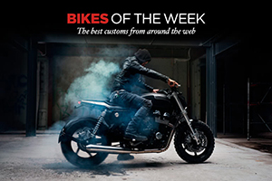

Is this the year of the BMW K100? We reckon so. The earlier R-series boxers have held the limelight for long enough—and let’s face it, any R donor you find now either comes at a premium, or has already been hacked. So if you’re looking for a classic Beemer, choose a K. You’ll get a...
Monomonkee: Getting Dirty with the Wrenchmonkees
The dirt track revolution continues apace. Even the big guns are turning their eyes towards the ovals, and the latest to catch the bug are Nicholas Bech and Per Nielsen of the Wrenchmonkees. We’re guessing the scene is pretty small in Denmark, but it’s only a three-hour drive from Copenhagen to the German border. “Nicholas...

Custom Bikes of the Week: 22 January, 2017
A classy Moto Guzzi Centauro from the USA, a racy BMW K100 from Japan, and a brawny Honda CB750 from Vietnam. Let’s end the weekend...
Gird Yourself: El Solitario's Street Legal Dirt Tracker
Batten down the hatches and don your flak jacket: The purveyors of the world’s most hated motorcycles are back. This time, the infamous El Solitario...
Review: Scramber Ducati Desert Sled
You don’t need to be a regular reader to know that scramblers are hot. Over the last few years, the term has become the go-to...
Subscribe and win $100
Sign up for the Bike EXIF email to get the latest customs as soon as they’re published. We'll also enter you into our monthly draw to win $100 to spend in Equipment, our motorcycle gear store.